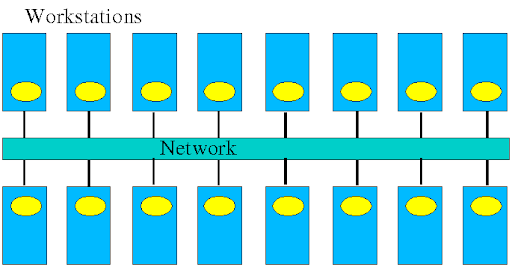
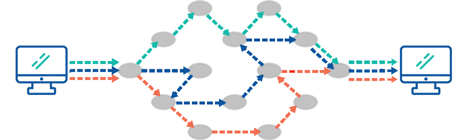
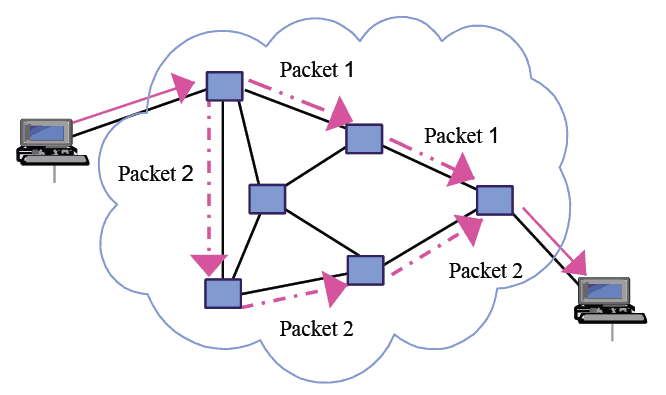

Network Terminologies & Switching Techniques
Network Terminologies
Let us first learn about some terminologies commonly used in networking.
- Nodes (Workstations) :
A computer becomes a node (also called a workstation) as soon as it is
attached to a network. Each user on a network works on a workstation. If
there are no nodes there would be no network.

- Server:-

A computer that facilitates sharing of data, software and hardware
resources on the network is known as the server. A network can have more
than one server also.Computer Network 1.1.2 Requirements of
a network At least two computers - Server or Client workstation.
Network
Interface Cards (NIC) A connection medium, usually a wire or cable,
although wireless communication between networked computers and
peripherals Network Operating system software, such as Microsoft Windows
NT or 2000, Novell NetWare, Unix and Linux. 1.1.3 Network Terminologies
Let us first learn about some terminologies commonly used in networking.
A computer becomes a node
(also called a soon as it is attached to a
network. Each user on a network works on a workstation. If there are no
nodes there would be no network. A computer that facilitates sharing of
data, software and hardware resources s known as the server. A network
can have more than one server also. Network Interface Cards (NIC) A
connection medium, usually a wire or cable, although wireless
communication between networked computers and peripherals ware, such as
Microsoft Windows NT or 2000, Let us first learn about some
terminologies commonly used in networking.
A computer becomes a node
(also called a workstation) as soon as it is attached to a network. Each
user on a network works on a workstation. If A computer that facilitates
sharing of data, software and hardware resources s known as the server.
A network can have more than one server also. Each server has a unique
name by which it is identified by all the nodes on the network.
Servers
can be of two types:
a) Dedicated and
b) Non dedicated servers
Dedicated
Servers: These are generally used on big network installations where one
computer is reserved for the server's job. It helps all nodes access
data, software and hardware resources. Since it does not double up as a
workstation but only manages the network, it is known as a dedicated
server and such types of networks are called master- slave networks.
Non
dedicated servers: In small networks, a workstation can double up as a
server. These servers are known as non dedicated servers. The small
networks using such a server are known as Peer to Peer networks.
- Network Interface Unit (NIU):-
A network interface unit is a device that is attached
to each of the workstations and the server which helps to establish communication
between the server and workstations. As soon as a standalone computer becomes a
workstation, it needs an interface to help establish connection with the network because
without this the workstations will not be able to share network resources or
communicate with each other. The NIC basically acts like an interpreter and is also
known as Terminal Access Point (TAP) or Network Interface card(NIC).The NIC
manufacturer assigns a unique physical address to each NIC card and this physical
address is known as the MAC address.
Switching Techniques
Switching techniques are used to efficiently transmit data across the network. The two
types of switching techniques employed nowadays to provide communication between
two computers on a network are:
Circuit Switching and Packet Switching Circuit
Switching.
- Circuit switching
A technique in which a dedicated and complete physical
connection is established between two nodes and through this dedicated
communication channel, the nodes may communicate. The circuit guarantees the
full bandwidth of the channel and remains connected for the duration of the
communication session. Even if no communication is taking place in a dedicated
circuit, that channel still remains unavailable to other users (idle channels). The
defining example of a circuit-switched network is the early analogue telephone
network. When a call is made from one telephone to another, switches within the
telephone exchange create a continuous wire circuit between the two
telephones, for as long as the call lasts.
- Packet switching
A switching technique in which packets (discrete blocks of
data of fixed size and of any content, type or structure) are routed between
nodes over data links shared with other traffic. The term "packets" refers to the
fact that the data stream from your computer is broken up into packets of about
200 bytes (on average), which are then sent out onto the network. Each packet
contains a "header" with information necessary for routing the packet from
source to destination. Each packet in a data stream is independent. The main
advantage of packet-switching is that the packets from many different sources
can share a line, allowing for very efficient use of the communication medium.
With current technology, packets are generally accepted onto the network on a
first-come, first-served basis. If the network becomes overloaded, packets are
delayed or discarded ("dropped"). This method of data transmission became the
fundamental networking technology behind the internet and most Local Area
Networks
Data communication terminologies
Let us learn about some data communication terminologies being used.
-
Channel:
A communication channel is a medium that is used in the transmission
of a message from one point to another. In simple terms we can say that it is a
pathway over which data is transferred between remote devices. It may refer to
the entire physical medium, such as a telephone line, optical fibre, coaxial cable
or twisted pair wire, or, it may refer to one of the several carrier frequencies
transmitted simultaneously within the line. Depending on their speed, we have
three broad categories of communication channels - narrow band which is slow
and used for telegraph lines and low speed terminals; voice band used for
ordinary telephone communication and broadband which is fastest and is used
for transmitting large volumes of data at high speeds.
- Bandwidth:
 In electronic communication, bandwidth refers to the range of
frequencies available for transmission of data. It is expressed as the difference in
Hertz(Hz) between the highest frequency and the lowest frequency. For example,
a typical voice signal has a bandwidth of approximately 3KHz. Wider the
bandwidth of a communication system, greater is the capacity and hence greater
is the amount of data that can be transmitted over a period of time.
In electronic communication, bandwidth refers to the range of
frequencies available for transmission of data. It is expressed as the difference in
Hertz(Hz) between the highest frequency and the lowest frequency. For example,
a typical voice signal has a bandwidth of approximately 3KHz. Wider the
bandwidth of a communication system, greater is the capacity and hence greater
is the amount of data that can be transmitted over a period of time.
- The data transfer rate (DTR)
The data transfer rate (DTR) is the amount of data in digital form that is moved
from one place to another in a given time on a network. As studied before, the
greater the bandwidth of a given medium, the higher is the data transfer rate.
This can also be referred to as throughput, although data transfer rate applies
specifically to digital data streams. Data transfer rate is often measured in bits
per second (bps), although the unit baud , which is one bit per second is also
used. It is commonly used to measure how fast data is transferred from one
location to another. For example, your ISP may offer an Internet connection with
a maximum data transfer rate of 4Mbps.